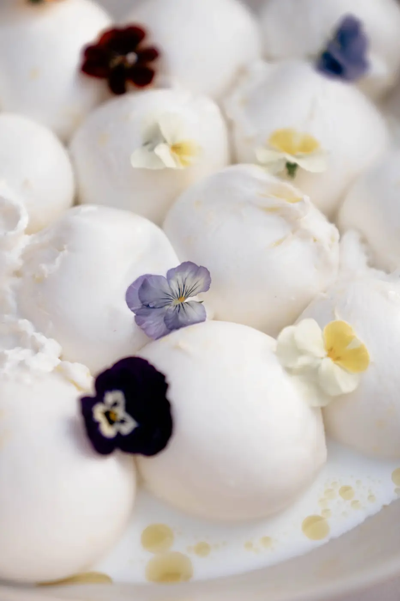
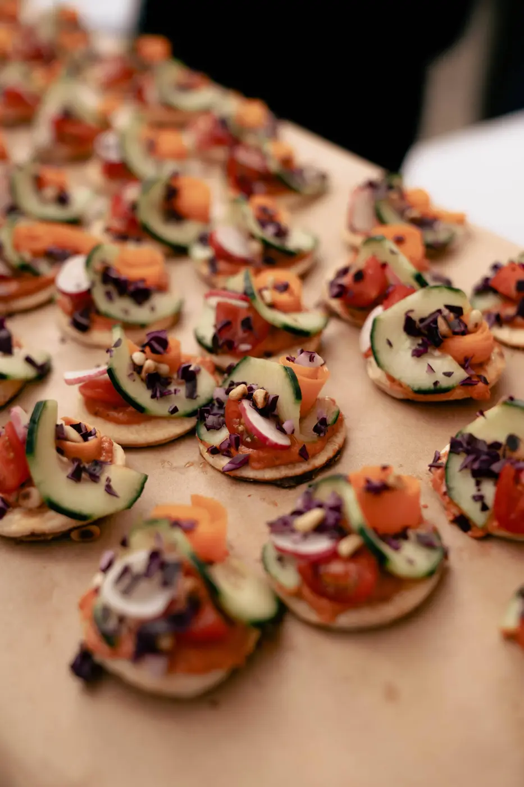
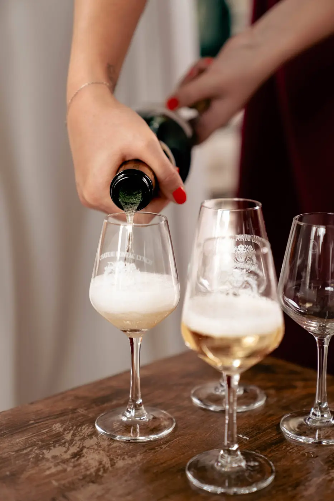
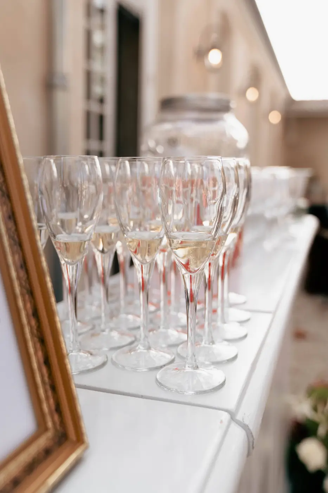
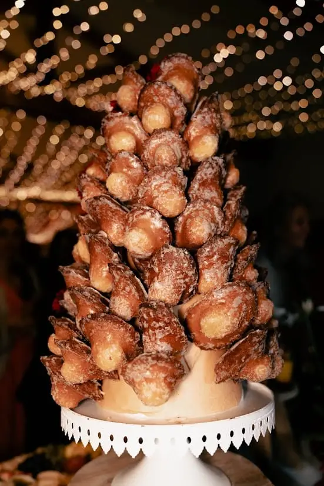
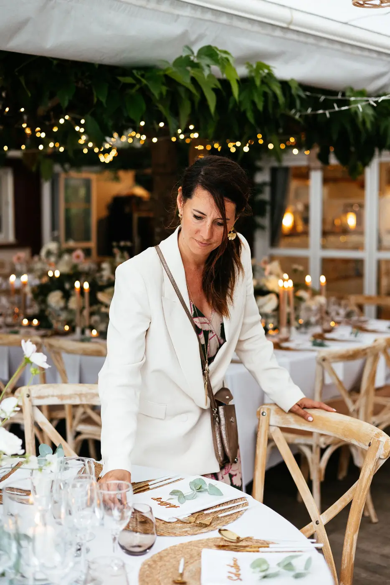

Lorsqu'on prépare son mariage, chaque détail compte. Le choix du lieu, la décoration, l'ambiance musicale ou encore les animations participent à la réussite de cette journée exceptionnelle. Pourtant, s'il existe un élément dont les invités se souviennent souvent pendant des années, c'est bien le repas.
Le menu de mariage occupe une place centrale dans l'expérience de vos convives. Un dîner réussi crée des souvenirs, favorise les échanges et contribue à l'atmosphère générale de votre réception. À l'inverse, une nourriture mal adaptée ou un menu trop complexe peut parfois laisser une impression mitigée.
Alors comment choisir un menu capable de satisfaire l'ensemble de vos invités ? Comment trouver l'équilibre entre vos envies personnelles et les attentes de vos proches ? Faut-il privilégier une cuisine locale ? Quel dessert fera l'unanimité ?
À Bordeaux et partout en Nouvelle-Aquitaine, les possibilités sont nombreuses pour composer un menu élégant, gourmand et accessible à tous.
Pourquoi le menu est-il si important lors d'un mariage ?
Le repas représente souvent plusieurs heures de votre réception. C'est durant le cocktail, le dîner et le dessert que les invités passent la majorité de leur temps ensemble.
La nourriture devient alors bien plus qu'un simple repas.
Elle participe à l'ambiance générale de la journée. Un menu bien pensé favorise les discussions, crée des souvenirs et contribue au plaisir des invités.
Posez-vous cette question : que retenez-vous généralement d'un mariage auquel vous avez assisté ?
Très souvent, les invités se rappellent du lieu, de l'ambiance et bien sûr du menu servi pendant le dîner.
C'est pourquoi il est essentiel d'accorder une attention particulière à chaque étape du repas.
Quel menu choisir pour satisfaire tous les invités ?
L'une des erreurs les plus fréquentes consiste à élaborer un menu uniquement selon les goûts des mariés.
Bien entendu, votre mariage doit vous ressembler. Mais il est également important de penser aux invités qui partageront cette journée avec vous.
Avant de sélectionner votre menu, prenez le temps d'identifier les éventuelles contraintes alimentaires :
- Végétariens
- Allergies alimentaires
- Intolérances alimentaires
- Régimes particuliers
- Restrictions religieuses
Plus vous connaissez les habitudes de vos invités, plus il sera facile de construire un menu adapté.
L'objectif n'est pas de créer dix menus différents, mais plutôt d'offrir une nourriture variée qui puisse satisfaire le plus grand nombre.
Faut-il privilégier une nourriture locale pour son mariage ?
La réponse est très souvent oui.
À Bordeaux et en Nouvelle-Aquitaine, nous avons la chance de bénéficier d'un patrimoine gastronomique exceptionnel.
Choisir une nourriture locale permet de mettre en valeur votre région tout en offrant des produits de qualité à vos invités.
Les produits locaux présentent plusieurs avantages :
-une fraîcheur optimale
-une meilleure traçabilité
-une qualité gustative supérieure
-une démarche plus responsable
Les invités apprécient particulièrement de découvrir des spécialités régionales lorsqu'ils participent à un mariage.
Les huîtres du Bassin d'Arcachon, le canard du Sud-Ouest, les asperges des Landes ou encore les vins de Bordeaux apportent une véritable identité à votre menu.
Un menu local raconte également une histoire. Il permet à vos invités de vivre une expérience authentique et profondément ancrée dans le territoire.
Comment construire un dîner équilibré ?
Le dîner constitue souvent le cœur de la réception.
Un bon dîner doit être généreux sans être excessif.
De nombreux couples pensent qu'un menu doit comporter une multitude de plats pour impressionner leurs invités. Pourtant, ce n'est pas toujours la meilleure stratégie.
Un dîner trop copieux risque de fatiguer les convives avant même le début de la soirée dansante.
L'idéal consiste à privilégier :
- Une entrée raffinée
- Un plat principal équilibré
- Un dessert gourmand
Cette formule permet généralement de satisfaire les invités tout en conservant un rythme agréable durant la réception.
Posez-vous une autre question : vos invités auront-ils encore envie de profiter de la soirée après le dîner ?
Un menu trop lourd peut rapidement diminuer l'énergie générale de l'événement.

Comment faire plaisir à tous les profils d'invités ?
Dans un mariage, plusieurs générations se retrouvent autour de la même table.
Les attentes ne sont pas forcément les mêmes.
Les grands-parents apprécient souvent une cuisine traditionnelle tandis que les plus jeunes sont parfois séduits par des propositions plus modernes.
Pour satisfaire l'ensemble des invités, il est conseillé de miser sur des recettes accessibles et élégantes.
Les produits de qualité sont souvent plus importants que l'originalité à tout prix.
Un excellent poisson accompagné de légumes de saison séduira généralement davantage qu'une recette très technique ou expérimentale.
Votre menu doit avant tout créer du plaisir.
Pourquoi adapter son menu à la saison ?

La saison influence directement la qualité de la nourriture proposée.
Un mariage organisé en plein été à Bordeaux ne nécessite pas le même menu qu'une réception organisée en automne ou en hiver.
Les produits de saison sont :
- Plus savoureux
- Plus frais
- Plus économiques
- Plus respectueux de l'environnement
En été, les invités apprécient particulièrement une nourriture légère et rafraîchissante.
À l'inverse, un dîner hivernal pourra accueillir des plats plus généreux et réconfortants.
La saison doit toujours guider vos choix culinaires.
Le cocktail : un moment stratégique pour vos invités
Le cocktail donne souvent le ton de la réception.
C'est le premier contact de vos invités avec l'univers gastronomique de votre mariage.
Pourquoi ne pas proposer plusieurs ateliers autour de produits locaux ?
Par exemple :
-bar à huîtres
-atelier plancha
-découpe de jambon
-brasero
-dégustation de spécialités locales
Ces animations permettent aux invités de se rencontrer tout en découvrant une nourriture conviviale et qualitative.
Le cocktail représente également une excellente occasion de mettre en avant votre identité et vos goûts personnels.



Quel dessert choisir pour faire l'unanimité ?
Le dessert est l'un des moments les plus attendus du repas.
Mais comment choisir un dessert capable de satisfaire tous les invités ?
Aujourd'hui, les possibilités sont nombreuses :
- Pièce montée traditionnelle
- Wedding cake
- Buffet de desserts
- Café gourmand
- Bar à gourmandises
Le dessert idéal est souvent celui qui propose plusieurs choix.
Tous les invités n'ont pas les mêmes préférences. Certains adorent le chocolat, d'autres préfèrent les fruits ou les pâtisseries plus légères.
Multiplier les propositions permet d'offrir une expérience plus personnalisée.
Le dessert constitue également l'une des parties les plus photographiées du mariage.
Il mérite donc une attention particulière.

Et les enfants dans tout ça ?
Les enfants font partie intégrante de nombreux mariages.
Leur proposer un menu adapté est essentiel.
Un menu enfant simple mais qualitatif permettra aux plus jeunes de profiter pleinement de la fête.
L'objectif n'est pas de proposer une nourriture standardisée, mais plutôt des plats rassurants qu'ils auront plaisir à déguster.
Un enfant satisfait pendant le dîner contribue également au confort de ses parents.
En tant que wedding planner à Bordeaux, je conseillerais toujours de penser à l'expérience globale
En tant que wedding planner à Bordeaux, je conseillerais toujours aux futurs mariés de réfléchir à leur menu dans sa globalité.
Le repas ne se résume pas à une succession de plats.
Il s'agit d'une véritable expérience qui accompagne vos invités tout au long de la journée.
Je recommande souvent de privilégier une nourriture locale de qualité plutôt qu'un menu trop complexe. Les produits locaux de Nouvelle-Aquitaine offrent une richesse incroyable et permettent de créer une réception authentique.

Je conseille également de penser au rythme du dîner. Un repas trop long ou trop copieux peut ralentir l'ambiance générale de la soirée.
Enfin, ne sous-estimez jamais l'importance du dessert. C'est souvent le dernier souvenir gustatif que vos invités conserveront avant de rejoindre la piste de danse.
Chaque décision doit être prise avec une seule question en tête : « Mes invités vont-ils passer un moment exceptionnel ? »
Pourquoi organiser une dégustation avant le mariage ?

Aucun menu ne devrait être validé sans dégustation préalable.
Cette étape permet de vérifier :
-les saveurs
-les portions
-la présentation
-les accords mets et vins
-le rythme du dîner
La dégustation est aussi l'occasion d'affiner certains détails du menu.
Parfois, un simple ajustement sur une garniture, un dessert ou une cuisson peut transformer complètement l'expérience proposée aux invités.
Le menu parfait existe-t-il vraiment ?
La vérité est qu'il n'existe pas de menu universel.
Chaque mariage est unique.
Le meilleur menu est celui qui correspond à votre histoire, à votre budget, à votre lieu de réception et aux attentes de vos invités.
Que vous organisiez un mariage dans un château près de Bordeaux, dans les vignobles girondins ou ailleurs en Nouvelle-Aquitaine, le plus important reste de créer un moment de partage.
Un menu réussi n'est pas forcément le plus luxueux.
C'est celui qui rassemble les invités autour d'une même émotion.
En bref,
Choisir son menu de mariage demande réflexion, écoute et anticipation. Entre le cocktail, le dîner et le dessert, chaque étape contribue à l'expérience globale de vos invités.
Privilégier une nourriture de qualité, valoriser les produits locaux de Bordeaux et de Nouvelle-Aquitaine, adapter le menu aux différentes générations et penser au confort des invités sont les clés d'une réception réussie.
Parce qu'au-delà des fleurs, de la décoration ou de la musique, ce sont souvent les moments passés autour d'une bonne table qui restent gravés dans les mémoires.
Alors, quel menu racontera le mieux votre histoire ?
Lovely Day Event c'est plusieurs types de prestations
L'organisation de mariage
Je vais intervenir sur toutes les étapes de vos préparatifs et vous guider dans vos choix. Je suis force de proposition pour que votre mariage ne ressemble qu’à vous.
Décoration de mariage
Créative et passionnée, je suis certifiée Wedding Designer et je conçois une ambiance scénographique qui correspond au thème de votre mariage.
Coordination le jour J
Je serai le chef d'orchestre pour gérer les différents prestataires, la mise en place de votre décoration et le déroulement de cette belle journée.